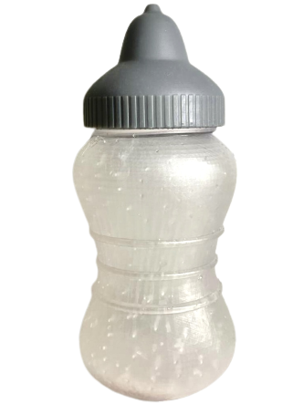
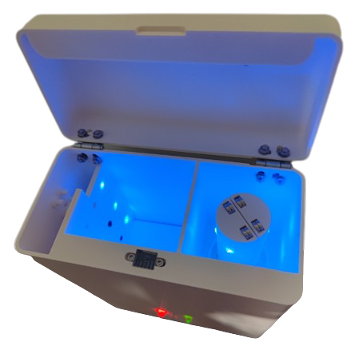
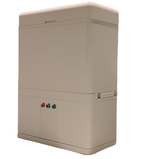

SinuComfort
Designed and developed a novel sinus rinse delivery system with improved comfort, self-sanitization and self- drying capabilities, eliminating customer complaints identified from our user discovery.



OBJECTIVE: Develop an upgraded version of NeilMed bottle to improve the sinus rinse experience.
DESIGN: The bottle design is ergonomic and allows easy cleaning. The nozzle design accommodates different shapes of nostril. The accessory device features self-sanitizing and self-drying. The concept was designed in Fusion, fabricated using SLA and FDM printers, and prototyped with electronics controlled by an Arduino board.